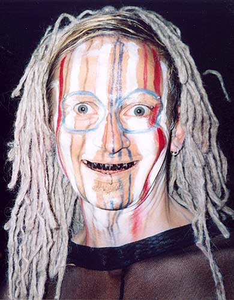
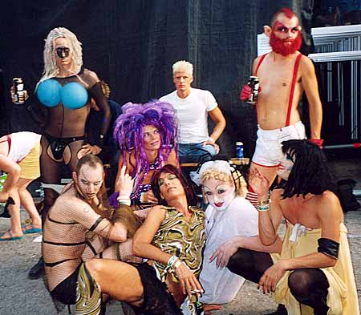
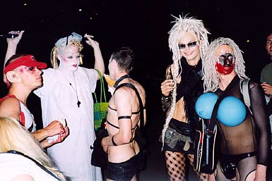
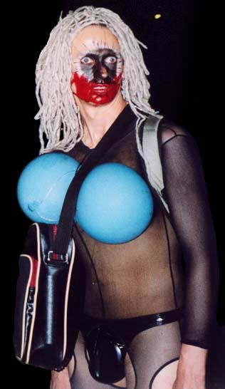
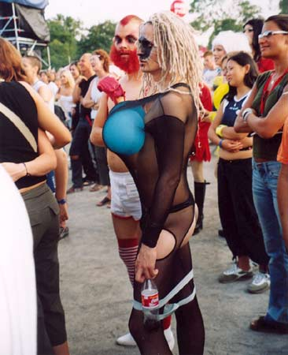
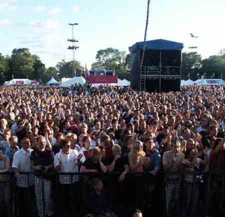

Dennis Agerblad in the Dunst show at WigStockholm, Stockholm. |

Dennis Agerblad.

Dennis Agerblad, Miss Fish, Stimulundia, Liebling Siebling, Ramona Macho,
The Thom & Puta. (Blond man in the back?)

The Thom, Ramona Macho, Miss Fish, Hairwerk & Dennis Agerblad.

Dennis Agerblad.

The Thom & Dennis Agerblad.

Liebling Siebling, Latterlige Luzy, Puta, Dennis Agerblad, The Thom, Miss Fish,
Ramona Macho, Stimulundia & Hairwerk.
